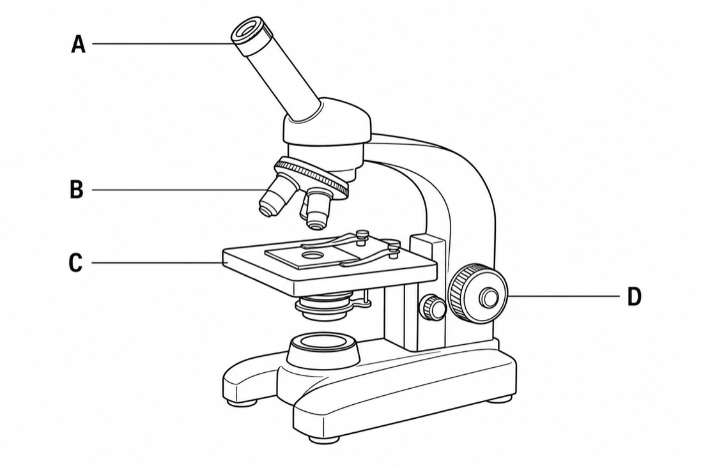
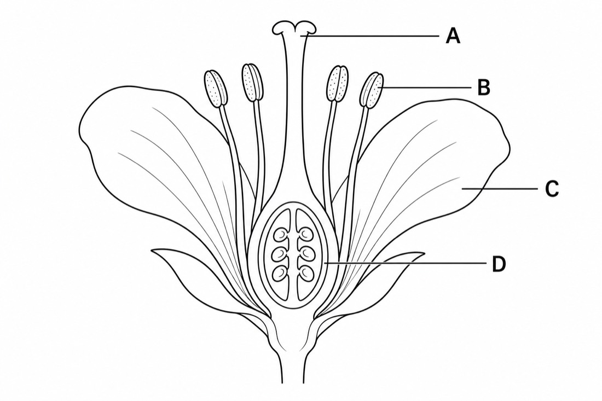
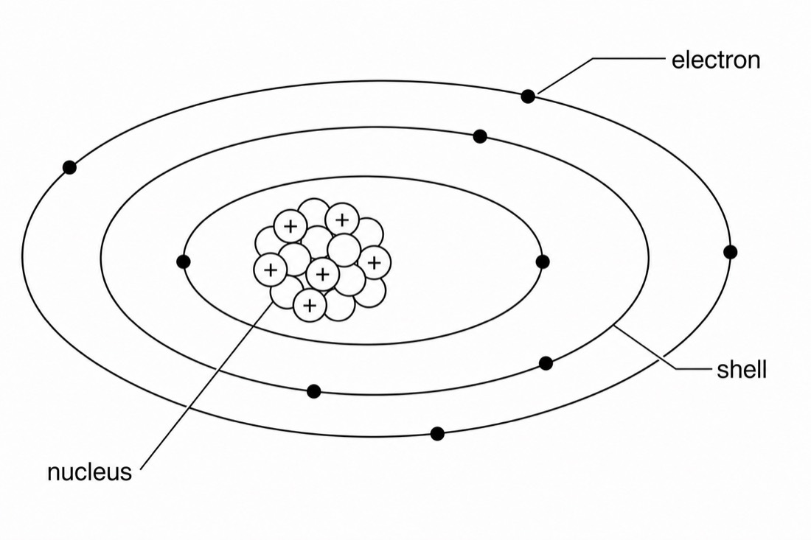
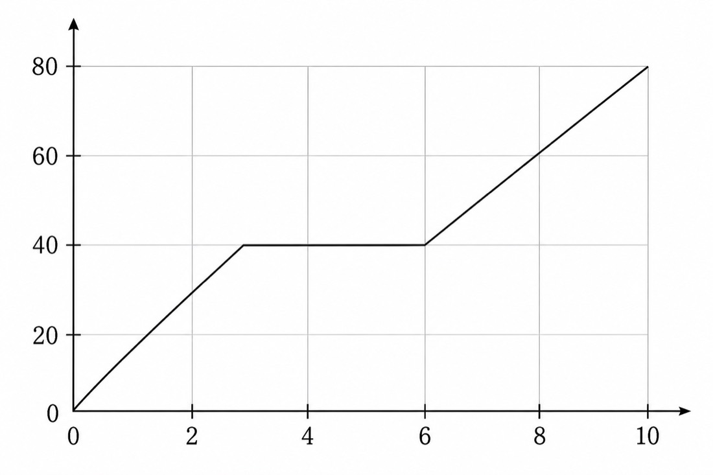
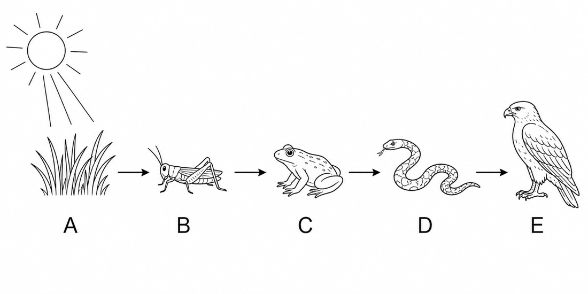
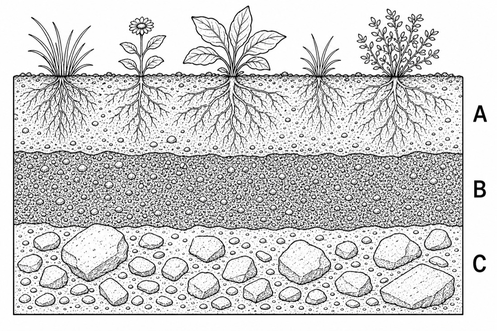
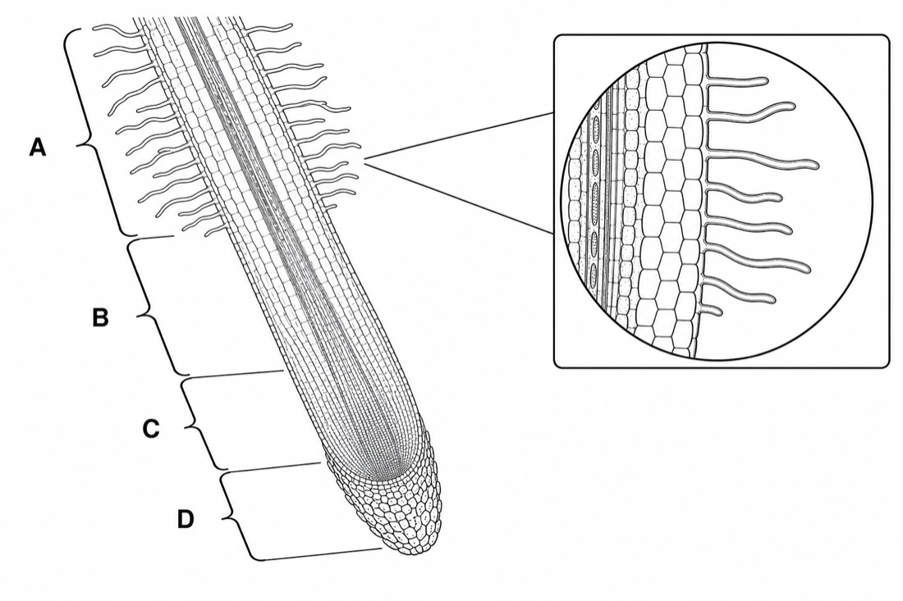
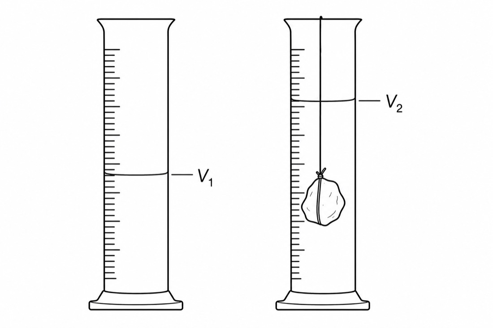
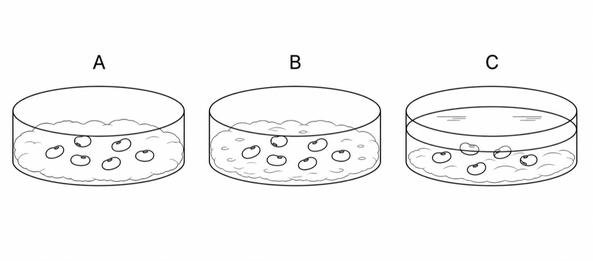

学校 班级 姓名 考号 密封线内不要答题
七年级下册科学模拟试卷
浙教版方向 · 图文综合卷 · 满分 100 分 · 建议用时 90 分钟
姓名：
班级：
得分：
用时：
注意：本卷共四大题，满分 100 分，考试时间 90 分钟。读图题须先观察图示信息，再写出依据；实验题须写清变量、现象和结论。
一、选择题 共 12 题，每题 2 分，共 24 分
- 观察图 1，显微镜中用于放置玻片标本的结构是（ ）

图 1 - 观察图 2，花完成受精后通常发育成果实的结构最可能是（ ）

图 2 - 观察图 3，带负电并绕原子核运动的粒子是（ ）

图 3 - 观察图 4，曲线中温度保持不变的一段通常说明该物质正在（ ）

图 4 - 观察图 5，食物链中的生产者是（ ）

图 5 - 观察图 6，植物根系最密集、腐殖质较多的土层是（ ）

图 6 - 观察图 7，根吸收水分和无机盐的主要区域是（ ）

图 7 - 观察图 8，用排水法测小石块体积时，小石块体积等于（ ）

图 8 - 观察图 9，若要探究“水分对种子萌发的影响”，最适合比较的是（ ）

图 9 - 显微镜视野较暗时，应优先调节（ ）
- 土壤中能保持水分和空气的结构特点主要与（ ）有关。
- 下列做法符合实验安全的是（ ）
二、填空题 共 10 空，每空 2 分，共 20 分
- 原子核通常由 和 构成。
- 质量为 81g、体积为 30cm³ 的物体密度为 g/cm³。
- 种子萌发需要适宜的温度、一定的水分和充足的 。
- 水从液态变成气态的过程叫 。
- 植物蒸腾作用主要通过叶片上的 进行。
- 在“草 → 昆虫 → 青蛙 → 蛇”中，青蛙属于第 营养级。
三、读图与实验探究题 共 6 题，共 36 分
- 6 分 图 1 为显微镜结构示意图。写出 A、B、C、D 中任意三个结构名称，并说明低倍镜换高倍镜后视野亮度如何变化。
图 1 - 6 分 图 2 为花的结构示意图。指出与形成种子、果实直接有关的结构，并说明传粉和受精的先后关系。
图 2 - 6 分 图 7 为根尖结构示意图。说明根毛区适于吸收水分的两个结构特点。
图 7 - 6 分 图 9 为种子萌发实验装置。写出该实验的自变量、至少两个控制变量，并预测哪一组更容易萌发。
图 9 - 6 分 图 4 为某物质加热过程的温度变化曲线。判断该物质是否可能为晶体，并说明理由。
图 4 - 6 分 图 6 为土壤剖面。结合植物根系分布，说明保护植被为什么有利于减少水土流失。
图 6
四、计算与综合题 共 2 题，共 20 分
- 10 分 一个金属块质量为 156g，放入量筒后水面由 40mL 上升到 60mL。求该金属块的密度，并写出单位换算过程。
- 10 分 图 5 表示一条食物链。若某种污染物会沿食物链逐级积累，判断哪一级生物体内污染物浓度可能最高，并说明生态系统保护的意义。
图 5